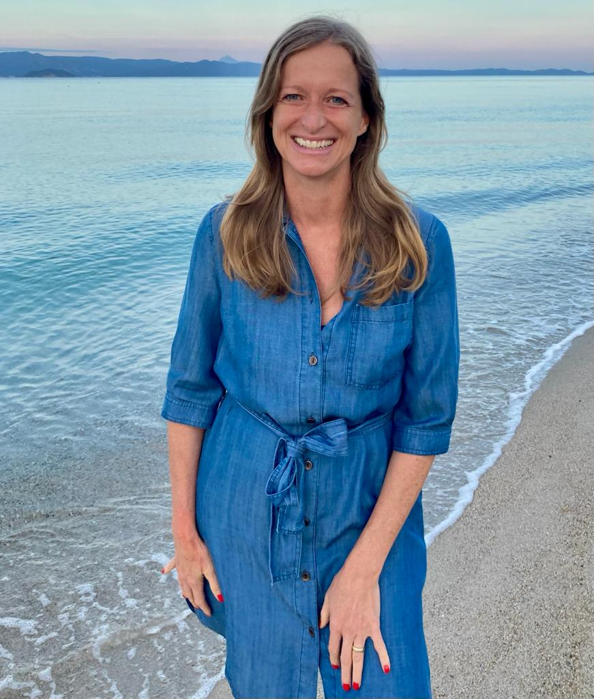
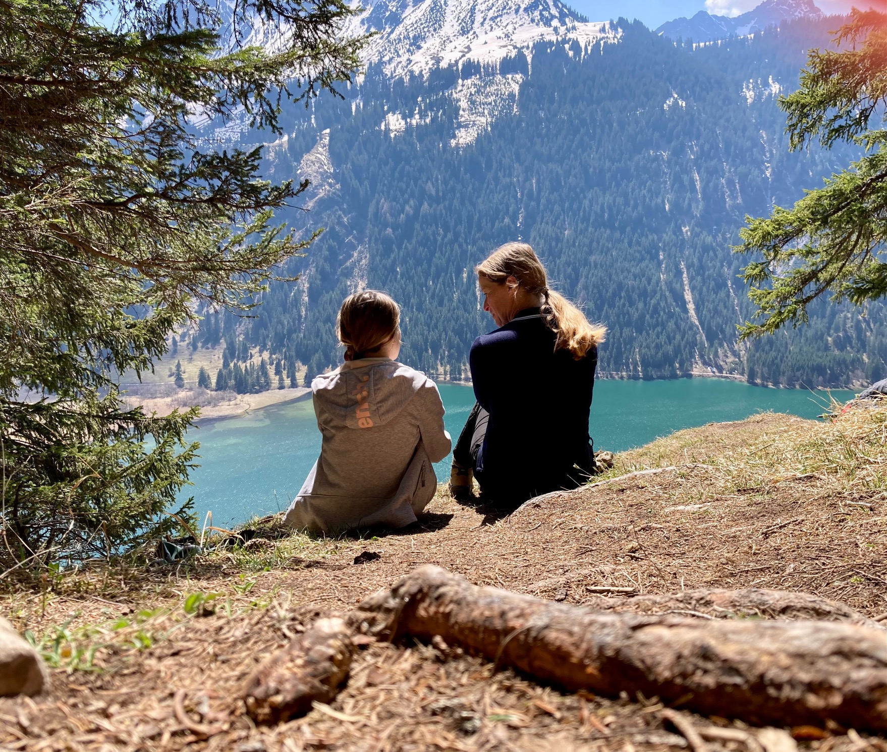
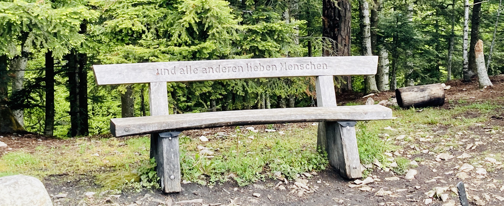

Magst du wissen, wieso ich diese Waldgespräche, dieses Coaching im Wald anbiete? Zunächst einmal, weil ich ausgebildete Lehrerin bin mit Berufswahl- und Lerncoaching Weiterbildung an der Fachhochschule und vielen Jahren Erfahrung in Gesprächen mit Jugendlichen und Erwachsenen. Dann bin ich auch Mutter und kenne die Sorgen und Nöte von Eltern und ihren Kindern auf dem Weg hin zum Erwachsensein.

"Du kannst etwas verändern
jeden Tag und zu jeder Zeit"
- Jane Goddall

Über mich
Hallo, ich bin Ivana
Coaching in der Natur
Ich werde erstmal zuhören. Dann werden wir ins Gespräch kommen. Ich gebe dir gerne Feedback, wenn du dies wünscht. Du wirst staunen, wie viele Lösungswege und Möglichkeiten es gibt, um weiter zu kommen auf deinem Weg... Egal, ob du abnehmen willst, einen Streit klären, die Noten in der Schule verbessern, eine Lehrstelle oder einen neuen Job finden, deinen Selbstwert stärken, deine Angst vor Spaziergängen im Wald abbauen oder irgend etwas anderes. Ich bin für dich da und begleite dich bei deinem Prozess zu einem Leben mit viel Leichtigkeit.
Coaching Gespräche
Ausschlaggebend für die Idee der Waldgespräche waren jedoch die Spaziergänge und Joggingrunden im Wald, welche ich während der Corona-Zeit fast täglich unternommen habe. Ich durfte die belebende und erfrischende Wirkung dieser Naturmomente immer wieder erleben. Ich habe mir viele Gedanken gemacht. Das war ganz leicht, einfach Ideen entstehen lassen und wieder verwerfen. Mich mit mir auseinandersetzen und erstmal erkennen, was mir wichtig ist und wo ich hin will. In der Bewegung draussen in der Natur, ohne Handy und ohne Ablenkung, ist vieles möglich, was Zuhause zwischen Arbeit und Haushalt keinen Platz findet.

Was beschäftigt dich?
Nach einem ersten Kontakt per Mail, Telefon oder Instagramm treffen wir uns bei mir Zuhause in Pfeffingen BL. Und dann geht es auch schon ab in den Wald. Rund um Pfeffingen gibt es zahlreiche Möglichkeiten für Waldspaziergänge. Je nach Zeit, die du mitbringst, werde ich die Strecke auswählen. Wir können steil bergauf oder gemütlich den Waldrand entlang gehen. Es gibt diverse Bänkli mit Aussicht, falls du dich ausruhen möchtest Du bestimmst, was du brauchst.
Termine
Freie Termine gibt es von Mo-Fr sowie Sa-Vormittag. Ich melde mich innerhalb von 48 Stunden auf deine Anfrage. Für's Coaching von Mädchen im Alter von 12-18 Jahren ist ein Erstgespräch mit einem Elternteil erforderlich.
Die Waldgespräche dauern im Minimum 60 Minuten. Die Bezahlung erfolgt durch Überweisung im Voraus oder Barzahlung. Bei Verhinderung können Gespräche bis 24 Stunden vorher kostenlos storniert werden.
Für Mädchen & junge Frauen von 12-22 Jahren
90 FR /Stunde
Für Frauen ab 23 Jahren
120 FR /Stunde

Kontakt
ivana@Waldgespräche.ch
Impressum
Angaben gemäß § 5 TMG
Max Muster
Musterweg
12345 Musterstadt
Vertreten durch:
Max Muster
Kontakt:
Telefon: 01234-789456
Fax: 1234-56789
E-Mail: max@muster.de
Umsatzsteuer-ID:
Umsatzsteuer-Identifikationsnummer gemäß §27a Umsatzsteuergesetz: Musterustid.
Wirtschafts-ID:
Musterwirtschaftsid
Aufsichtsbehörde:
Musteraufsicht Musterstadt
Haftungsausschluss:
Haftung für Inhalte
Die Inhalte unserer Seiten wurden mit größter Sorgfalt erstellt. Für die Richtigkeit, Vollständigkeit und Aktualität der Inhalte können wir jedoch keine Gewähr übernehmen. Als Diensteanbieter sind wir gemäß § 7 Abs.1 TMG für eigene Inhalte auf diesen Seiten nach den allgemeinen Gesetzen verantwortlich. Nach §§ 8 bis 10 TMG sind wir als Diensteanbieter jedoch nicht verpflichtet, übermittelte oder gespeicherte fremde Informationen zu überwachen oder nach Umständen zu forschen, die auf eine rechtswidrige Tätigkeit hinweisen. Verpflichtungen zur Entfernung oder Sperrung der Nutzung von Informationen nach den allgemeinen Gesetzen bleiben hiervon unberührt. Eine diesbezügliche Haftung ist jedoch erst ab dem Zeitpunkt der Kenntnis einer konkreten Rechtsverletzung möglich. Bei Bekanntwerden von entsprechenden Rechtsverletzungen werden wir diese Inhalte umgehend entfernen.
Urheberrecht
Die durch die Seitenbetreiber erstellten Inhalte und Werke auf diesen Seiten unterliegen dem deutschen Urheberrecht. Die Vervielfältigung, Bearbeitung, Verbreitung und jede Art der Verwertung außerhalb der Grenzen des Urheberrechtes bedürfen der schriftlichen Zustimmung des jeweiligen Autors bzw. Erstellers. Downloads und Kopien dieser Seite sind nur für den privaten, nicht kommerziellen Gebrauch gestattet. Soweit die Inhalte auf dieser Seite nicht vom Betreiber erstellt wurden, werden die Urheberrechte Dritter beachtet. Insbesondere werden Inhalte Dritter als solche gekennzeichnet. Sollten Sie trotzdem auf eine Urheberrechtsverletzung aufmerksam werden, bitten wir um einen entsprechenden Hinweis. Bei Bekanntwerden von Rechtsverletzungen werden wir derartige Inhalte umgehend entfernen.
Datenschutz
Die Nutzung unserer Webseite ist in der Regel ohne Angabe personenbezogener Daten möglich. Soweit auf unseren Seiten personenbezogene Daten (beispielsweise Name, Anschrift oder eMail-Adressen) erhoben werden, erfolgt dies, soweit möglich, stets auf freiwilliger Basis. Diese Daten werden ohne Ihre ausdrückliche Zustimmung nicht an Dritte weitergegeben.
Wir weisen darauf hin, dass die Datenübertragung im Internet (z.B. bei der Kommunikation per E-Mail) Sicherheitslücken aufweisen kann. Ein lückenloser Schutz der Daten vor dem Zugriff durch Dritte ist nicht möglich.
Der Nutzung von im Rahmen der Impressumspflicht veröffentlichten Kontaktdaten durch Dritte zur Übersendung von nicht ausdrücklich angeforderter Werbung und Informationsmaterialien wird hiermit ausdrücklich widersprochen. Die Betreiber der Seiten behalten sich ausdrücklich rechtliche Schritte im Falle der unverlangten Zusendung von Werbeinformationen, etwa durch Spam-Mails, vor.
Impressum vom Impressum Generator der Kanzlei Hasselbach, Frankfurt
Datenschutzerklärung
Verantwortlich im Sinne der Datenschutzgesetzes:
Max Muster
Musterweg
12345 Musterstadt
Datenschutz
Als Webseitenbetreiber nehmen wir den Schutz aller persönlichen Daten sehr ernst. Alle personenbezogenen Informationen werden vertraulich und gemäß den gesetzlichen Vorschriften behandelt, wie in dieser Datenschutzerklärung erläutert.
Unserer Webseite kann selbstverständlich genutzt werden, ohne dass Sie persönliche Daten angeben. Wenn jedoch zu irgendeinem Zeitpunkt persönliche Daten wie z.B. Name, Adresse oder E-Mail abgefragt werden, wird dies auf freiwilliger Basis geschehen. Niemals werden von uns erhobene Daten ohne Ihre spezielle Genehmigung an Dritte weitergegeben.
Datenübertragung im Internet, wie zum Beispiel über E-Mail, kann immer Sicherheitslücken aufweisen. Der komplette Schutz der Daten ist im Internet nicht möglich.
Auskunft, Löschung, Sperrung
TZu jedem Zeitpunkt können Sie sich über die personenbezogenen Daten, deren Herkunft und Empfänger und den Nutzen der Datenverarbeitung informieren und unentgeltlich eine Korrektur, Sperrung oder Löschung dieser Daten verlangen. Bitte nutzen Sie dafür die im Impressum angegebenen Kontaktwege. Für weitere Fragen zum Thema stehen wir Ihnen ebenfalls jederzeit zur Verfügung.
Server-Log-Files
Der Seiten-Provider erhebt und speichert automatisch Daten in Server-Log Files, die von Ihrem Browser an uns übermittelt werden. Diese Daten enthalten: Browsertyp/ Browserversion, Betriebssystem des Rechners, Referrer URL, Hostname des zugreifenden Rechners, Uhrzeit der Serveranfrage
Diese Daten sind nicht personenbezogen. Es erfolgt keine Zusammenführung dieser Daten mit anderen Datenquellen. Wenn uns konkrete Anhaltspunkte für eine rechtswidrige Nutzung bekannt werden behalten wir uns das Recht vor, diese Daten nachträglich zu überprüfen.
Änderung der Datenschutzbestimmungen
Unsere Datenschutzerklärung können in unregelmäßigen Abständen angepasst werden, damit sie den aktuellen rechtlichen Anforderungen entsprechen oder um Änderungen unserer Dienstleistungen umzusetzen, z. B. bei der Einfügung neuer Angebote. Für Ihren nächsten Besuch gilt dann automatisch die neue Datenschutzerklärung.